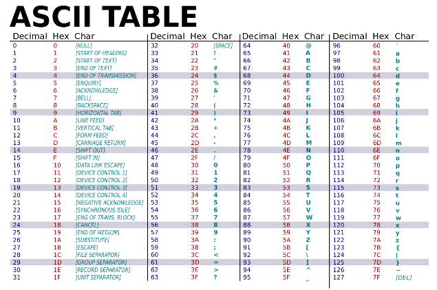
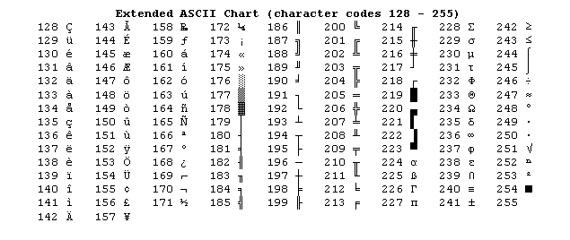

|
Cryptographer
1.0
Programme pouvant encrypter/décrypter un fichier
|


|
|
Cryptographer
1.0
Programme pouvant encrypter/décrypter un fichier
|
|
Le but de ce projet est de réaliser un programme permettant d’encrypter des fichiers quelconques avec une clé que l’on lui fournit ainsi que de déchiffrer ces fichiers (avec cette même clé).
Pour le cryptage, on utilise 5 méthodes différentes de cryptage symétrique (qui sont réversibles) que l’on va répéter N fois (N étant choisi par l’utilisateur) afin d’augmenter la sécurité du cryptage. Ce projet se fera purement en langage C avec une équipe de 2 développeurs.
Prenons l’exemple suivant :
Un fichier est fourni au programme avec une « clé » et le nombre de répétitions N, le programme va encrypter le fichier puis envoyer ce nouveau fichier au même endroit que le fichier fourni.
Inversement on peut demander au programme de décrypter un fichier en lui fournissant le fichier, la « clé » et le nombre de répétitions.
C’est pour cela que l’on appelle cette méthode la cryptographie symétrique, on va passer les mêmes paramètres en entrée pour crypter ou décrypter un fichier (à part le fait que pour décrypter, il faudra le fichier crypté, bien entendu).
A l’ouverture du programme, celui-ci commencera par vous demander si vous voulez crypter ou décrypter un fichier, après quoi 3 informations vous seront demandées dans cette ordre :
Une fois toutes ces informations saisies, le programme va commencer le cryptage/décryptage, quand il aura fini vous serez informé par le texte suivant « Termine ! Retrouvez le résultat au même emplacement que le fichier de départ. ».
En cas d’erreur, si le fichier à encrypter n’existe pas par exemple, le programme vous indiquera cette erreur et vous donnera la possibilité de la corriger (dans le cas d’un fichier non existant, il vous proposera d’entrer à nouveau un lien vers un fichier).
Une fois que vous avez trouvé votre fichier, au même emplacement que le fichier de départ (cet emplacement vous sera indiqué par le programme), vous pouvez fermer la fenêtre du programme sans problème en appuyant sur n’importe quelle touche du clavier.
Le programme ne fonctionne que pour les caractères standard, les caractères sortant de la table ASCII (ex : é, è, ê, à, voir ci-dessous) n’entraîneront pas la fermeture du programme, mais ils provoqueront des modifications qui seront visibles lors du décodage, par exemple, le(s) caractère(s) problématique(s) remplacés par des chaînes de caractères illisibles, comme ceci : « çé ».
Table ASCII standard :

Ajouts de la table ASCII étendue :
